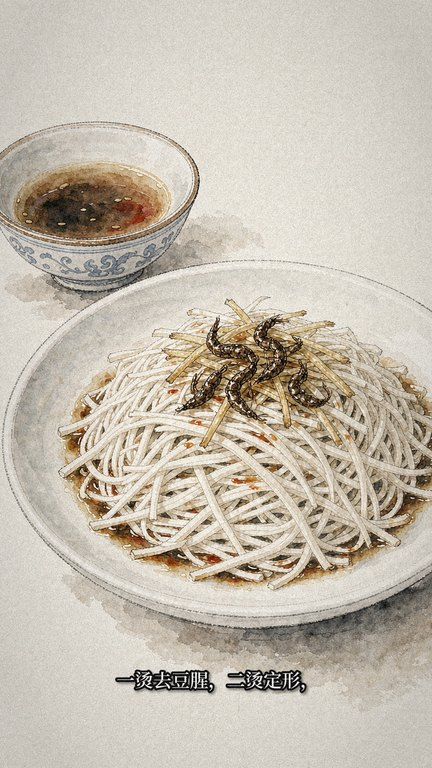
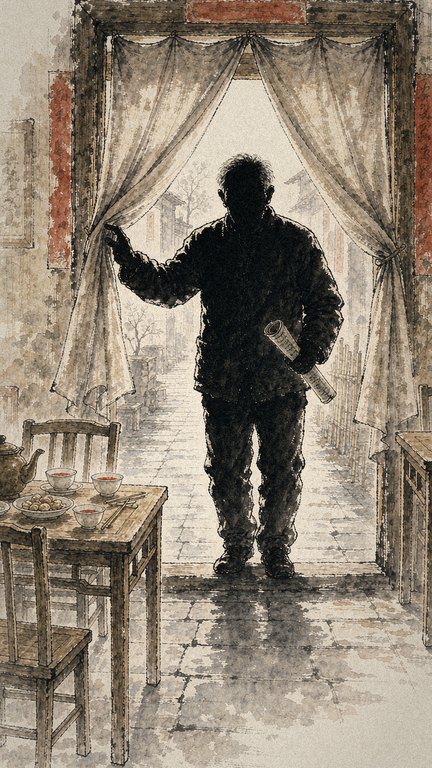
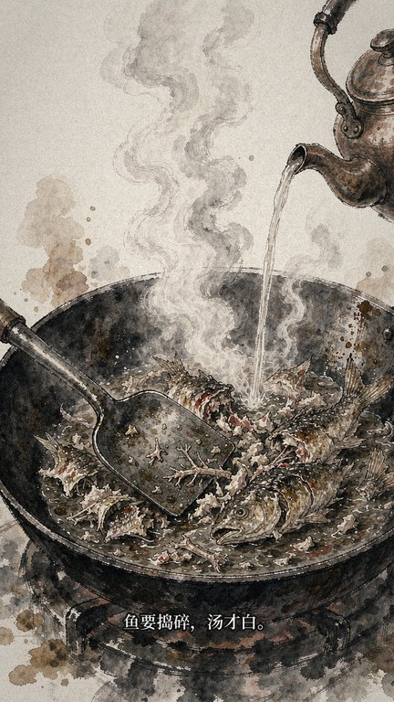
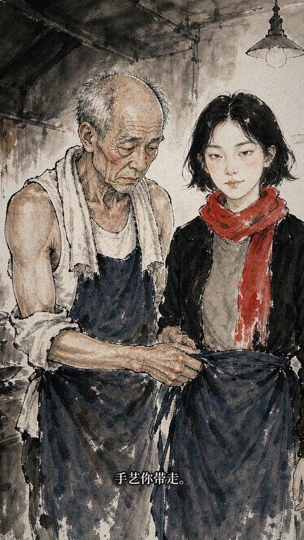
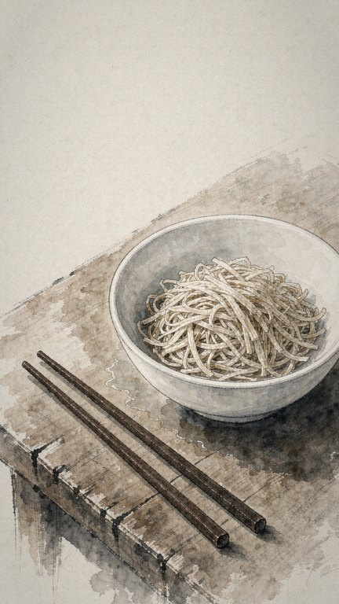
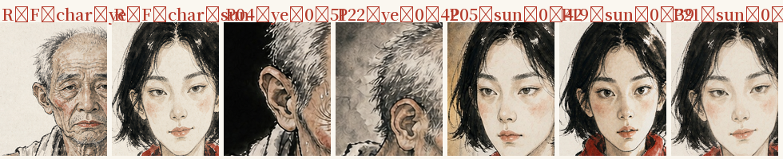

孙女要卖掉爷爷开了四十年的早茶店。
爷爷不拦，只让她在最后一个早晨，陪他把一碟干丝烫三遍。
泰州人说「早上皮包水」——早上喝茶。一套早茶叫「一茶三点一面」，头一样不是包子，是一碟烫干丝：一块豆腐干片成二十多层薄片，再切成细丝，沸水反复三烫，去豆腥、留柔韧，淋虾籽酱油与小磨麻油，撒姜丝、虾米。
一烫去豆腥，二烫定形，三烫回热。少一烫，就是凉菜。
这句话是片子里爷爷的口诀。三烫有据（泰州烫干丝「沸水反复三烫」见诸公开报道），三个步骤的名字是这个人自己叫的。





27 张画，一张一张生成；30 句台词，一句一句合成。每一步都在仓库里可复现——改片子只改一个文件（story.py：图版提示词 + 30 个镜头 + 30 条台词 + 音效表），然后重跑三条命令。
| 层 | 做法 |
|---|---|
| 画面 | 文生图 + 图生图：每张含人物的画都以人物设定图当参考图，双人镜头同时喂两张。水墨淡彩、四色板、宣纸底。 |
| 人物一致 | 三层：图生图锁定脸；服装记号每次点名（爷爷的灰毛巾、孙女的红围巾）；后期统一色链。验收见下。 |
| 声音 | edge-tts 四条声线；水沸、油煎、切菜、冲水、门轴、街声全部 numpy 程序合成；箫也是程序合成的，D 小调五声，16 个音。 |
| 镜头 | 逐帧仿射取样，只做推拉与竖向微移；五处幕间淡黑；拟声字只给两处（嗤、哗）。 |
| 字幕 | 程序排版烧字幕，字体随片（思源宋体子集 122 KB、马善政楷书子集 95 KB）。 |
官方规格里写着「人物形象前后一致」。所以这条不是靠眼看：每个含人脸的镜头，都拿人物设定图做一次带椭圆掩码的归一化互相关（只比头部，背景不参与打分），阈值 0.40；偏侧、暗光、双人同框的镜头放一档到 0.30，并留一张人工复核的证据条。

bash verify.sh 一条命令验 12 组条件：时长 / 画幅 / 编码 / 码率与体积 / 音轨 48k 立体声 / 响度与真峰 / 字幕条数与不重叠与停留时长 / 配音不超槽 / 分镜与成片对齐 / 取样窗不进工具水印 / 字体缺字为 0 / 人物 NCC。退出码即结论。